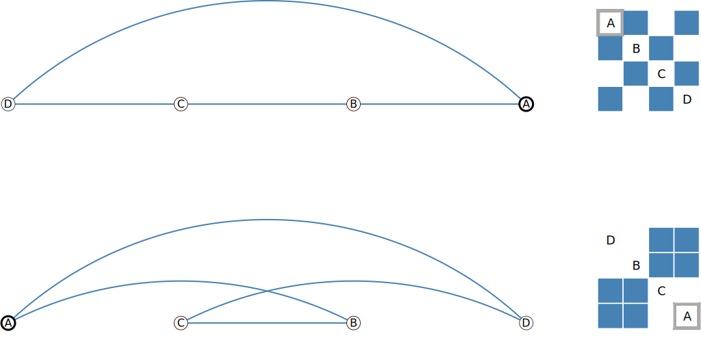
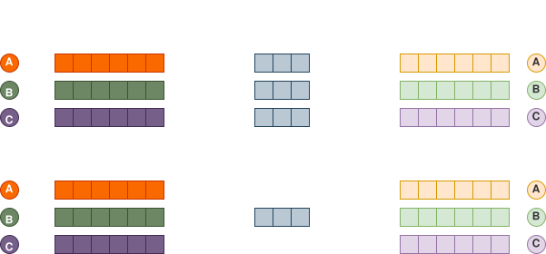
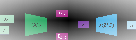

Foreword
This article is meant to give a brief introduction into a prominent problem in the context of generative graph neural network (GNN) models and a few examples of different approaches to defeat it. More precisely, we will look into variational autoencoders (VAE) and why the “reconstruction” part of their loss function is problematic when dealing with graphs.
Side note: if you want to learn more about the fundamentals of graph neural networks, I can highly recommend the following resources:
- 📚 Graph Representation Learning, by Hamilton [2]
- 📚 Graph Neural Networks: Foundations, Frontiers, and Applications, by Wu et al. [1]
- 🎥 Stanford CS224W: Machine Learning with Graphs, by Prof. Leskovec
- 📄 Math Behind Graph Neural Networks (2022)
- 📄 A Gentle Introduction to Graph Neural Networks (2021)
Graphs and the isomorphism problem
Graphs fundamentals
A graph can generally be denoted as , that is, a 4-tuple of nodes, edges and node- end edge attributes. The attributes, also called features, are optional and, if present, usually exist as -dimensional vectors. A more complex variant of graphs are heterogeneous graphs, consisting of multiple different types of nodes and edges, however, we focus only on homogeneous graphs in the following. The excellent “GNN Book” [1] lists various other types in addition (page xxxi).
A graph’s connectivity, i.e. its edges, is usually represented by the adjacency matrix (N is the number of nodes) that has either a binary or continuous (between 0 and 1) value, depending on whether edges are discrete or probabilistic.
Isomorphic graphs
While for images, you can say that “pixel X is at position P” or “pixel X is right of pixel Y”, graphs’ nodes do not have a fixed ordering and are not subject to any notion of spatial locality. There are many different ways to describe the same graph. For example, the graphs in fig. 1 “look” differently and have different adjacency matrices, but are structurally the same. More examples and a great interactive visualization can be found here (thanks!).
For this reason, the adjacency matrix itself is not a suitable representation of a graph in the context of machine learning. Imagine we had a generative model (like an autoencoder) that is tasked to produce the first graph (see fig. 1), but instead returns the second. When comparing the adjacency matrices, the model appears to be way off the mark even though is actually perfectly reconstructed the given graph.
Permutation invariance of GNNs
[…] graph-level representation should not depend on the order of the nodes in the input representation, i.e. two isomorphic graphs should always be mapped to the same representation. [9]
Due to the above mentioned isomorphism problem, a crucial requirement for graph neural networks is to be permutation-invariant or, at least, permutation-equivariant. That is, regardless of the ordering of nodes in the adjacency matrix, the embedding produced by the GNNs must be the same for the same graph (or an isomorphic variant of it) – or, in the case of equivariance, at least be “shifted” in the same way the nodes were shifted.

In formal terms:
- Permutation invariance:
- Permutation equivariance:
Graph autoencoders
General idea
Autoencoders are one of the most popular self-supervised learning approaches in the context of deep generative models. The basic idea si to map an arbitrary input to a latent representation (encoder) and train them to, subsequently, reconstruct from the latent. In case of variational autoencoders (VAE), the latent space is forced to roughly follow some simple prior distribution, usually a standard normal. The encoder, in case of VAE, does not output a latent vector directly, but rather the parameters of this distribution, i.e. usually . At inference time, we can then from this to obtain a conditioning for the decoder to generate a new sample. Formally, the encoder models , while the decoder models .
Depending on the problem definition, autoencoders can be used to generate structure (), features () or both. Also depending on the particular use case at hand, the autoencoder can either operate on a per-node level or generate entire graphs. In other words, the encoder produces either node-level latents or graph-level latents [2], illustrated in fig. 3. The problem addressed on this article only applies to the latter, i.e. the case where entire graphs are mapped to single embedding vectors (and reconstructed from such).
Fig. 4 shows an exemplary architecture of a graph autoencoder. In this case, structure and features are used as an input, however, only structural information is actually subject to generation. The decoder is realized as a simple dot-product, but could, alternatively, also consist of GNN- and / or sequence model layers. The depicted architecture is limited to fixed-sized graphs of non-variable structure.
Training loss
The problem considered in this article becomes clear when looking at the objective function with respect to which autoencoders are being trained. It’s called “ELBO” (evidence likelihood lower bound) and looks like so:
Do not worry too much about the actual equation. The key takeaway here is that it primarily consists of two parts. The regularization loss (right-hand of the minus) ensures that the latent space does not diverge too far from the chosen prior distribution. This part is not of importance here. The reconstruction loss (left of the minus), on the other hand, measures the degree to which the model output resembles the input.
And here comes the problem: as we learned earlier, there are a potentially a giant number () of different valid adjacency matrices for the exact same graph. If the model outputs some graph that is not the same, but isomorphic to the input, the reconstruction part of the loss might be maximally high (compare fig. 1), even though, in actual fact, the model had learned the right thing. Just like that, there is no obvious way to tell if the generated graph matches the input. Eq. 1 requires to specify a node ordering for [2], however, when squashing the entire graph down to a single latent (usually through pooling layers), any explicit node ordering information got lost. Simply comparing with and / or with is not sufficient.
[…] there is no straight-forward way to train an autoencoder network, due to the ambiguous reconstruction objective. [9]
What we would want to have is either the decoder or the reconstruction loss calculation itself to be permutation-invariant somehow (permutation-invariance of the encoder is relatively easy to achieve when using GNN layers). Or, possibly, even get rid of it entirely or only approximate it in some way. Literature has different approaches to go about this.
Solution approaches
Node-level embeddings
As explained earlier, the whole problem only exists when dealing with graph-level latents in the first place, so if we can settle for node-level representations, this might be a legitimate way forward. VGAE [3] (see fig. 3) and ARGVA [4] essentially follow this approach. However, it comes with some limitations. Besides the fact of being unsuitable in cases where you explicitly want graph-level embeddings, akin architectures are usually limited to graph with a (small) fixed or maximum number of nodes. Also, the decoder can overfit to arbitrary node ordering during training [2], which hampers training success. Consequently, this is not actually a real solution to our problem at hand, but nevertheless worth being mentioned.
Graph matching
An obvious way to achieve comparability of input and output node adjacency- and feature matrices is to align them using graph matching. Graph matching is a well-known, established technique with the goal to determine the best bipartite mapping between nodes of two graphs, e.g. using a library like GMatch4py. After the “best-matching” node ordering for some output graph has been found, it can be compared to the input for obtaining the reconstruction loss. GraphVAE [5] does exactly that. However, the drawback of this method (and related problems, like graph edit distance) is its computational complexity (often times at least ), rendering it inapplicable for larger graphs. More recently, graph matching networks (GMN) [6] have also emerged as an alternative to traditional approaches, the idea of which is to predict a good matching instead of analytically computing one.
Heuristic node ordering
Another strategy is to simply enforce a mapping based on some simple heuristics. For example, one could choose to order nodes on a depth-first or breadth-first search, starting from the highest-degree node [2]. More details and a comparison of different approaches is provided by Liao et al. [7].
Discriminator loss
CondGen [8] tackles the problem by essentially replacing the reconstruction loss with a discriminator loss. Inspired by architecture of generative adversarial networks (GAN), they train a discriminator network in addition the encoder and decoder that is tasked to distinguish between real and generated data samples. During training, it inherently learns to map isomorphic graph structures to identical (or at least very similar) latent vectors in a permutation-invariant manner. The reconstruction loss is then simply computed as the Euclidean distance between the discriminator’s latent embeddings of and . In some sense, what CondGen proposes is a VAE architecture “wrapped” by a GAN architecture.
Permuter network
Even another interesting (though fairly involved) technique is presented by PIGVAE [9]. They introduce the concept of a “permuter network”, which is trained alongside the encoder and decoder with the aim to learn the decoder’s “canonical” ordering. It allows to derive a permutation matrix for each input graph, which is ultimately used to align input and output graphs. More precisely, the permuter predicts scalar “scores” for each node (mapping from to ), which, in some sense, correspond to the probability of the respective node to have a low node index in the decoded graph’s ordering. This score vector, encoded using some positional encoding function, is then fed to the decoder as a conditioning in order to guide it to deviate from its inherent canonical ordering and instead produce an output ordering that matches the input. In other words: given the input graph’s embedding, the idea is to anticipate the decoder’s output ordering, derive a permutation matrix to reorder it in the desired way and pass that (in encoded form) to the decoder (alongside the actual ) to actually apply it. So much more the big picture, the while concept and implementation are even a lot more elaborate.
Closing remarks
I hope to have given a somewhat useful overview for one of the most prominent challenges with graph autoencoders. Note that all of this is only relevant for generative tasks. If your problem at hand is of discriminative nature instead (traditional representation learning), e.g. wanting to compute graph embeddings for similarity learning, you will probably not need autoencoders, but go with simpler approaches like contrastive learning instead.
Disclaimer: all of the above is based on my own understanding and provided without guarantee.
References
[1] L. Wu, P. Cui, J. Pei, and L. Zhao, Eds., Graph Neural Networks: Foundations, Frontiers, and Applications. Singapore: Springer Nature, 2022. Online at https://graph-neural-networks.github.io/.
[2] W. L. Hamilton, Graph Representation Learning. in Synthesis Lectures on Artificial Intelligence and Machine Learning. Cham: Springer International Publishing, 2020.
[3] T. N. Kipf and M. Welling, “Variational Graph Auto-Encoders,” Nov. 21, 2016, arXiv: arXiv:1611.07308.
[4] S. Pan, R. Hu, G. Long, J. Jiang, L. Yao, and C. Zhang, “Adversarially Regularized Graph Autoencoder for Graph Embedding,” Jan. 07, 2019, arXiv: arXiv:1802.04407. doi: 10.48550/arXiv.1802.04407.
[5] M. Simonovsky and N. Komodakis, “GraphVAE: Towards Generation of Small Graphs Using Variational Autoencoders,” in Artificial Neural Networks and Machine Learning – ICANN 2018, V. Kůrková, Y. Manolopoulos, B. Hammer, L. Iliadis, and I. Maglogiannis, Eds., Cham: Springer International Publishing, 2018, pp. 412–422.
[6] Y. Li, C. Gu, T. Dullien, O. Vinyals, and P. Kohli, “Graph Matching Networks for Learning the Similarity of Graph Structured Objects,” in Proceedings of the 36th International Conference on Machine Learning, PMLR, May 2019, pp. 3835–3845.
[7] R. Liao et al., “Efficient Graph Generation with Graph Recurrent Attention Networks,” in Advances in Neural Information Processing Systems, Curran Associates, Inc., 2019.
[8] C. Yang, P. Zhuang, W. Shi, A. Luu, and P. Li, “Conditional Structure Generation through Graph Variational Generative Adversarial Nets,” in Advances in Neural Information Processing Systems, Curran Associates, Inc., 2019.
[9] R. Winter, F. Noe, and D.-A. Clevert, “Permutation-Invariant Variational Autoencoder for Graph-Level Representation Learning,” presented at the Advances in Neural Information Processing Systems, Nov. 2021.